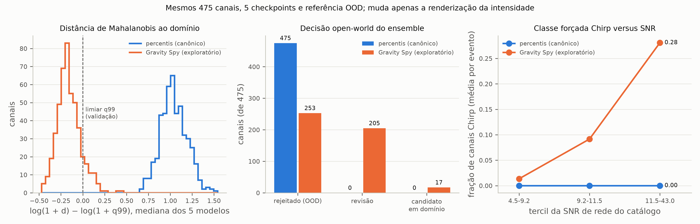
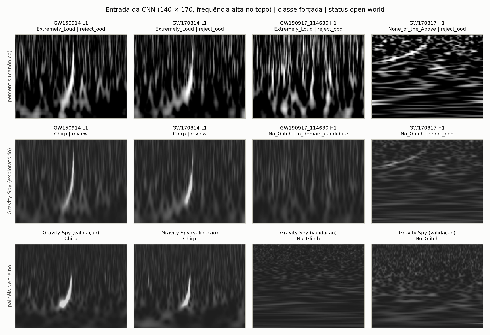
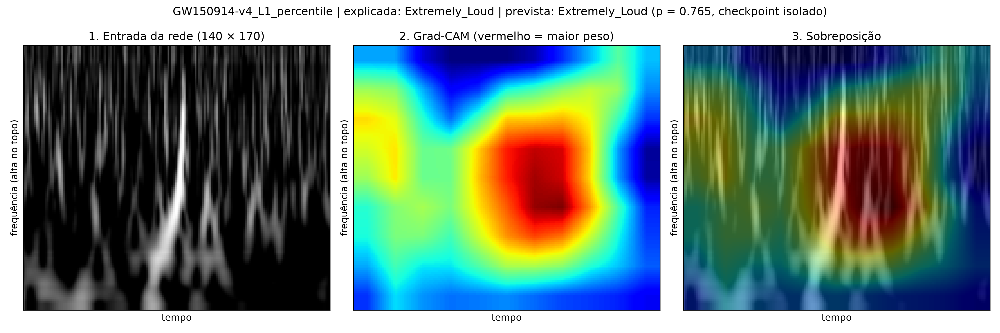
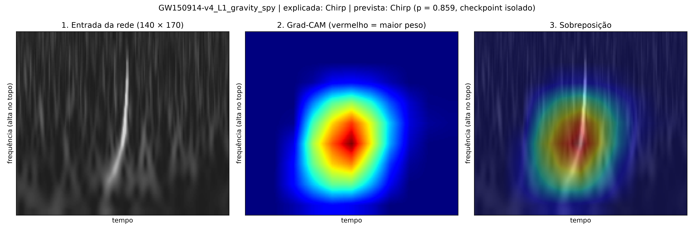

| Título do Projeto | Classificação de Glitches em Dados do LIGO com CNNs e Análise de Interpretabilidade (Projeto 3 – Ondas Gravitacionais) |
| Grupo de Pesquisa | PIC Astronomia |
| Período Abrangido | 10 a 17 de outubro de 2026 |
| Versão / Data | V3 – 17/10/2026. Sucede o Relatório V2 (07/10/2026) e sua errata. |
| Linha de código | gwproject 2.0 (PR #2, Daniel Tedesco), mesclada em 17/10/2026. A linha anterior (v9) está preservada na branch v9. |
| Repositório | https://github.com/jean5429/gw-pic-2026 |
Em 17/10/2026 o projeto adotou a linha gwproject 2.0, que reconstrói o pipeline sobre 218 eventos do catálogo GWTC-4 com controle de qualidade dos dados de treino, treinamento determinístico e referência OOD calibrada por modelo. A linha anterior (v9), base do Relatório V2, tinha três problemas documentados na errata do V2: um painel vazio repetido nos dados Gravity Spy, o limiar OOD calibrado nas mesmas amostras do ajuste e a mistura de modelos no escore OOD.
Este relatório documenta a reprodução independente e completa da linha 2.0 em outra máquina (NVIDIA RTX 3060), desde os dados brutos até as análises exploratórias, comparada com os artefatos canônicos registrados em ARTIFACT_HASHES.sha256:
clean_metadata.csv com SHA-256 idêntico ao canônico (7.807 amostras).aggregate_summary.json tem SHA-256 idêntico ao canônico (macro-F1 de teste 0,9449 ± 0,0092).A conclusão científica da linha 2.0 fica confirmada de forma independente: o classificador treinado nos painéis Gravity Spy não pode ser usado para classificar os Q-grams GWOSC com o pipeline canônico. A renderização na escala Gravity Spy reduz a mudança de domínio, mas a rejeição passa a vir do escore de energia, e o efeito permanece exploratório.
| Data | Marco |
|---|---|
| 07/10/2026 | Relatório V2: auditoria da linha v9 (orientação dos Q-grams, cores do Grad-CAM, escala de intensidade). |
| 10/10/2026 | PR #1 (Daniel Tedesco): correção do filtro casado do kit didático, mesclada. Correção posterior do espectrograma do kit. |
| 10/10/2026 | PR #2 (Daniel Tedesco): proposta da linha gwproject 2.0, incorporando as correções da v9 (renderização Gravity Spy, Grad-CAM, anonimização, 300 DPI). |
| 17/10/2026 | Merge do PR #2 na main; linha v9 preservada na branch v9; relatórios mantidos em docs/relatorios/. |
| 17/10/2026 | Errata do Relatório V2: os três problemas da v9 e seu efeito quantificado (por exemplo, 60 e não 150 de 150 canais acima do limiar OOD com o cálculo corrigido). |
| 17/10/2026 | Reprodução independente completa da linha 2.0 (este relatório). |
| Hardware | AMD Ryzen 5 5600G, 32 GB RAM, NVIDIA GeForce RTX 3060 (12 GB) |
| Software | Windows 11; ambiente conda gwproject (Python 3.11.17); PyTorch 2.5.1 + CUDA 12.1 (versão do treino canônico); NumPy 2.4.6, SciPy 1.17.1, pandas 2.3.3 (iguais ao environment-lock-gpu.yml); gwpy 4.1.0 (o arquivo travado indica 4.0.1) |
| Roteiro | tools/preparar_passos_1_2.ps1 (ambiente e painéis) e os comandos de research/GUIA_DE_EXECUCAO.md (treino, OOD, aquisição, catálogo, ensemble, auditoria e consolidação) |
| Etapa | Comando principal | Duração |
|---|---|---|
| Ambiente e testes (123 aprovados) | tools/preparar_passos_1_2.ps1 | ~40 min |
| Painéis com controle de qualidade | gwproject research prepare-panels | ~2 min |
| Treino das 5 seeds | gwproject research train-seeds | 1 h 46 min |
| Referência OOD e controle no teste | build-ood, validate-ood | ~3 min |
| Aquisição e processamento dos 218 eventos | gwproject acquire -- --download-strain --process --qgrams | 2 h 45 min |
| Índice, metadados, ridge, filtro casado, ensemble, auditoria, consolidação | gwproject catalog …, gwproject research … | ~7 min |
| Renderização exploratória, comparação e Grad-CAM | classify-ensemble --render-mode gravity_spy, compare-ensembles, gradcam | ~1 min |
| Item | Reprodução | Canônico |
|---|---|---|
| Registros da metadata oficial | 7.966 | 7.966 |
| Painéis vazios excluídos | 159 | 159 |
| dos quais duplicatas exatas entre divisões | 139 | 139 |
| Amostras limpas (treino / validação / teste) | 7.807 (5.472 / 1.177 / 1.158) | 7.807 (5.472 / 1.177 / 1.158) |
SHA-256 de clean_metadata.csv e qc_summary.json | idênticos | |
| Seed | 11 | 23 | 42 | 71 | 101 |
|---|---|---|---|---|---|
| Macro-F1 de teste | 0,9337 | 0,9390 | 0,9570 | 0,9446 | 0,9503 |
| Melhor época | 26 | 17 | 19 | 20 | 15 |
| Métrica de teste (5 seeds) | Reprodução | Canônico |
|---|---|---|
| Macro-F1 | 0,9449 ± 0,0092 | 0,9449 ± 0,0092 |
| Acurácia balanceada | 0,9459 ± 0,0116 | 0,9459 ± 0,0116 |
| Kappa | 0,9610 ± 0,0041 | 0,9610 ± 0,0041 |
| Acurácia | 0,9648 ± 0,0037 | 0,9648 ± 0,0037 |
SHA-256 de aggregate_summary.json | idêntico | |
Comparado com a linha v9 (macro-F1 0,856, treinada com o painel vazio), o ganho é de cerca de 9 pontos percentuais.
| Imagens de teste acima do limiar (5 modelos) | Reprodução | Canônico | Nominal |
|---|---|---|---|
| Mahalanobis ≥ q95 | 3,3% – 5,4% | 3,4% – 5,4% | 5% |
| Mahalanobis ≥ q99 | 0,4% – 1,2% | 0,4% – 1,2% | 1% |
| Energia ≥ q95 / q99 | 4,5% – 6,0% / 0,4% – 1,4% | – | 5% / 1% |
Para comparação, a referência da linha v9 rejeitava 42,3% das imagens de teste no q99 (errata do V2).
| Item | Reprodução | Canônico |
|---|---|---|
| Eventos / combinações evento–detector | 218 / 654 | 218 / 654 |
| Canais aprovados | 475 | 475 |
| Sem dados públicos / não finitos / rejeitados no branqueamento | 153 / 21 / 5 | 153 / 21 / 5 |
| Eventos em rede / com um detector / inutilizáveis | 204 / 14 / 0 | 204 / 14 / 0 |
| Resultado (475 canais) | Reprodução | Canônico |
|---|---|---|
reject_ood / review / in_domain_candidate | 475 / 0 / 0 | 475 / 0 / 0 |
| Classes forçadas: None_of_the_Above / Extremely_Loud / Repeating_Blips | 243 / 231 / 1 | 244 / 230 / 1 |
| Excesso de Mahalanobis, log (média por evento) | +1,039 | +1,039 |
| Auditoria de atalhos: acurácia balanceada / AUROC (folds por evento) | 0,769 / 0,817 | 0,769 / 0,817 |
| Percentis → Gravity Spy (mesmos canais, modelos e referência) | Reprodução | Canônico |
|---|---|---|
reject_ood, média por evento | 1,000 → 0,547 (475 → 253) | 1,000 → 0,544 (475 → 252) |
review | 0 → 205 | 0 → 206 |
in_domain_candidate | 0 → 17 | 0 → 17 |
| Mahalanobis acima do q99 | 475 → 49 | 475 → 49 |
| Energia acima do q99 | 0 → 228 | 0 → 227 |
| Excesso de Mahalanobis (log), mediana por evento | +1,039 → −0,152 | +1,039 → −0,153 |
| Confiança fechada do ensemble | 0,735 → 0,536 | 0,735 → 0,536 |
| Classe forçada alterada | 464 de 475 | 464 de 475 |
| Spearman(SNR de rede, fração Chirp) por evento | +0,50 | +0,50 |




| Ridge (475 canais) | Reprodução = Canônico |
|---|---|
| Ajustes aceitos | 201 |
| Eventos com estimativa em rede / em um detector / sem estimativa | 75 / 40 / 103 |
| Erro relativo contra o catálogo condicionante: mediana / média / p90 | 34,7% / 40,1% / 78,8% |
| Filtro casado local (218 eventos) | Reprodução = Canônico |
|---|---|
| Análise concluída / sem template ativo / sem massas no referencial do detector | 164 / 12 / 42 |
| Template central vencedor / SNR local acima do limiar / margem top-2 / coincidência | 9 / 61 / 65 / 34 |
| Gates diagnósticos locais / gate completo | 7 / 0 |
Ridge e filtro casado continuam sendo diagnósticos condicionados ao catálogo: não sustentam medição cega de massa, detecção nem taxa de falso alarme.
| Artefato | SHA-256 | Observação |
|---|---|---|
data/gravity_spy_harmonized/clean_metadata.csv, qc_summary.json | idênticos | Mesma base de treino. |
models/…/aggregate_summary.json | idêntico | Treino determinístico reproduzido bit a bit. |
outputs/gwtc4_218/catalog_dataset_summary.json | idêntico | Mesmo conjunto de canais. |
Ridge: diagnostic_summary.json, per_event.csv; filtro casado: summary.json | idênticos | Mesmos diagnósticos. |
catalog.csv, approved_channels.csv, event_quality_summary.csv, run_log.json | diferentes | Valores em ponto flutuante do processamento (gwpy 4.1.0 contra 4.0.1), metadados GWOSC atualizados e caminhos locais; contagens idênticas. |
Referência OOD (.npz, .json) e controle no teste | diferentes | Arquivos zip com data de criação e registros de horário; taxas no teste compatíveis (5.3). |
| Ensemble, estatísticas renderizadas, auditoria de domínio, tabela dos 218 eventos, ridge e filtro casado por canal/evento | diferentes | Propagam as diferenças numéricas dos Q-grams; resultados agregados iguais, com no máximo 1 canal de diferença. |
De 24 artefatos comparáveis, 7 são idênticos byte a byte; os demais diferem por fatores conhecidos e não científicos. Para uma reprodução byte a byte da etapa de aquisição, o ambiente deveria fixar o gwpy em 4.0.1 (seção 9).
igwn-segments no Windows: no PyPI só existe como código-fonte e exige compilador C; o environment.yml passou a instalá-lo pelo conda-forge.gwpy não fixada: o environment.yml instalou a 4.1.0, enquanto o canônico usou a 4.0.1. É a causa provável das diferenças numéricas da seção 6.| Item | Status | Observações |
|---|---|---|
| Linha gwproject 2.0 adotada | Concluído | Merge do PR #2; v9 na branch v9. |
| Errata do Relatório V2 | Concluído | docs/relatorios/Errata_Relatorio_V2.pdf. |
| Reprodução independente da linha 2.0 | Concluído | Dados e treino idênticos; resultados agregados reproduzidos. |
| Validade externa no GWTC-4 | Resultado negativo confirmado | 475/475 canais fora do domínio com o renderer canônico. |
| Renderização Gravity Spy | Exploratório | Reduz a distância de Mahalanobis; discordância com a energia em aberto. |
| Redação científica | Pendente | Depende da decisão sobre o renderer e das questões da seção 9. |
gwpy 4.0.1 no environment.yml e, se desejado, repetir a aquisição para reprodução byte a byte dos artefatos de catálogo.research/PARECER_CIENTIFICO_E_ROTEIRO.md): entender por que a distância se aproxima do domínio enquanto a confiança cai.gwpy é fixado em 4.0.1 e a aquisição repetida.A linha gwproject 2.0 foi reproduzida de forma independente, do download dos dados ao relatório: a base de treino e o treino dos cinco modelos são idênticos aos canônicos, a referência OOD está calibrada, e o catálogo de 218 eventos, o ensemble, a auditoria de domínio e os diagnósticos de ridge e filtro casado reproduzem os resultados publicados, com diferenças de no máximo um canal atribuíveis a uma versão diferente do gwpy. Isso confirma tanto a reprodutibilidade do pipeline quanto o resultado principal: com o pipeline canônico, os Q-grams dos eventos GWTC-4 estão fora do domínio do classificador Gravity Spy. A renderização na escala Gravity Spy reduz essa distância e faz a classe Chirp acompanhar a SNR, mas permanece exploratória enquanto a discordância entre os escores OOD não for entendida.
Na raiz do repositório, com o ambiente gwproject ativo e CUBLAS_WORKSPACE_CONFIG=:4096:8:
& .\tools\preparar_passos_1_2.ps1
gwproject research train-seeds .\data\gravity_spy_harmonized\clean_metadata.csv .\data\gravity_spy_harmonized --profile cuda_balanced --output-dir .\models\gravity_spy_harmonized_v1d1
gwproject research aggregate-seeds .\models\gravity_spy_harmonized_v1d1
gwproject research build-ood .\models\gravity_spy_harmonized_v1d1 --metadata .\data\gravity_spy_harmonized\clean_metadata.csv --images-root .\data\gravity_spy_harmonized --device cuda --output .\outputs\research\gwtc4_218\ood_reference.npz
gwproject research validate-ood .\outputs\research\gwtc4_218\ood_reference.npz --metadata … --images-root … --device cuda --output .\outputs\research\gwtc4_218\ood_test_control.json
gwproject acquire -- --download-strain --process --qgrams
gwproject catalog index · gwproject catalog refresh-metadata -- --workers 4
gwproject catalog ridge -- --workers 2 --no-resume · gwproject catalog matched-filter -- --workers 1 --no-resume · gwproject catalog diagnose-ridge
gwproject research classify-ensemble .\models\gravity_spy_harmonized_v1d1 --ood-reference … --device cuda --output-dir .\outputs\research\gwtc4_218\gravity_spy_ensemble
gwproject research catalog-statistics … · audit-domain … · consolidate-events … --expected-events 218
gwproject research classify-ensemble … --render-mode gravity_spy --output-dir .\outputs\research\renderer_gravity_spy_20261017\ensemble_gravity_spy
gwproject research compare-ensembles … --output-dir .\outputs\research\renderer_gravity_spy_20261017\comparacao
gwproject research gradcam --event GW150914-v4 --detector L1 --render-mode gravity_spy
Figuras 1 e 2 geradas por research/figures/renderizador_gravity_spy_figuras.py a partir das execuções desta reprodução; as saídas completas ficam em outputs/ e models/, fora do versionamento.